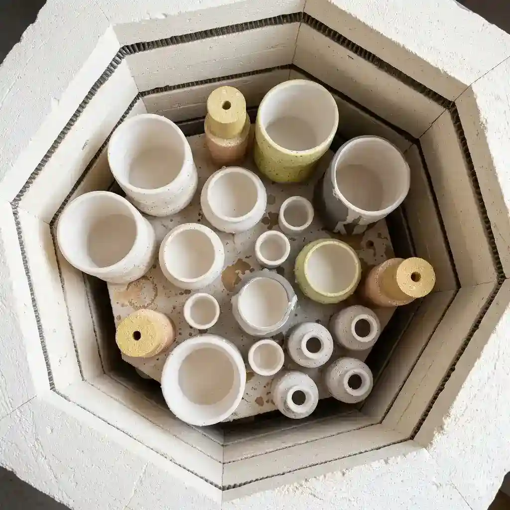

Si ya estás creando tus propias piezas y necesitás un horno de confianza, ofrecemos servicio profesional de horneadas (quemas) en Caballito, límite con Almagro. Bizcocho, esmaltado, loza y gres.

40 x 40 x 45 cm.
Trabajamos las dos cocciones que necesita una pieza de cerámica: el bizcocho, que es la primera quema de la pieza en crudo y la deja lista para esmaltar, y el esmaltado, la cocción final después de aplicar el esmalte, que le da a la pieza su acabado vidriado. El servicio está disponible tanto para alumnas del taller como para ceramistas externos de Caballito, Almagro y el resto de CABA que necesiten un horno confiable para sus proyectos.
Nota: si llenás el horno, podés elegir la temperatura y la curva que desees.
¿Cómo reservar? Escribinos por WhatsApp con el tamaño y la cantidad de piezas que necesitás cocer y te confirmamos disponibilidad y costo. ¿Necesitás la ubicación y cómo llegar?
Ofrecemos un servicio de horneadas para ceramistas independientes de toda CABA, adaptado a las necesidades de cada pieza y proyecto. Podés solicitar bizcocho (primera quema) y/o esmaltado, con opciones de cocción para loza a 1.060°C y gres (Cono 5). Contamos con horno propio de 70 litros (40 x 40 x 45 cm) en nuestro taller de Caballito, límite con Almagro, donde recibimos piezas de ceramistas que necesitan un espacio de cocción confiable para continuar sus proyectos.
Sí. "Horneada" y "quema" se usan como sinónimos en cerámica: ambas se refieren a la cocción de las piezas en el horno, ya sea el bizcocho (primera quema) o el esmaltado (segunda quema).
Escribinos por WhatsApp indicando el tamaño y la cantidad de piezas que necesitás cocer. Te confirmamos disponibilidad de horno y costo según tu proyecto.
El bizcocho es la primera cocción de la pieza en crudo, que la endurece y la deja lista para esmaltar. El esmaltado es la segunda cocción, después de aplicar el esmalte, y le da a la pieza su acabado final vidriado.
Contamos con un horno de 70 litros (40 x 40 x 45 cm) en nuestro taller de Caballito, límite con Almagro. La cantidad de piezas depende del tamaño de cada una; si el horno se llena con tu pedido, podés elegir la temperatura y la curva de cocción que necesites.
No. El servicio de horneadas está disponible tanto para alumnas del taller como para ceramistas y artesanas independientes de toda CABA que necesiten un horno confiable para sus piezas.